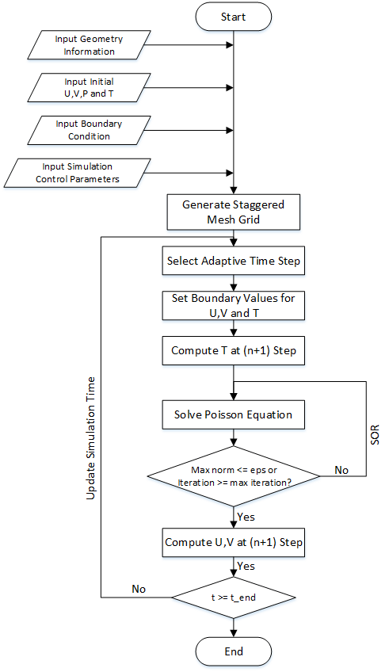
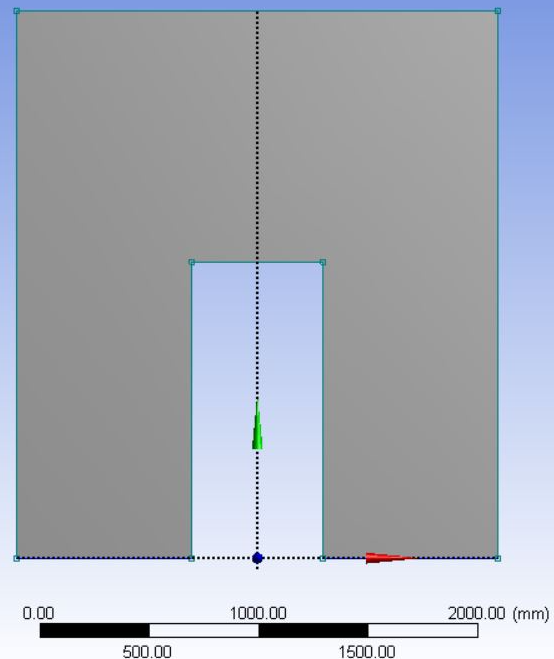

Parallelization of CFD on DCAC System
Summary
We are going to implement a 2D CFD solver to simulate airflow patterns of a Data Center Air-Conditioning System with MPI model.
Background
Data centers nowadays require cooling all year round due to high power density of each rack as well as large quantity of servers. To reduce energy consumption and save costs, many effective computer room air conditioning (CRAC) systems are designed for optimizing the cooling performance as well as the amount of energy savings.
In order to detect the potential problem due to bad air flow design, computational fluid dynamic (CFD) simulation is necessary. Our 2D Navier-Stokes solver is aimed to predict the interior air flow patterns and temperature distribution with different inlet velocities and validate the results with Ansys. The simulation results can be used to help CRAC system designers to identify better CRAC configurations.
Simulation Algorithm
The simulation begins with geometry, boundary type and simulation control parameter input. To avoid serious oscillations of pressure value, a staggered grid mesh is then generated . The main time-stepping simulation loop starts after initialization. An adaptive time step is calculated for stability purpose. Boundary values of the matrices of x-velocity (U), y-velocity (V) is updated at each time step n. Then the values of temperature (T) at each cell in fluid domain at (n+1) time step is solved. With that, a linear system of pressure values (P) is solved with Poisson solver with successive over-relaxation (SOR). With pressure values (P) at (n+1) time step, x-velocity (U) and y-velocity at (n+1) time step can be solved. Simulation time and step are updated after each main iteration. The whole simulation terminates when simulation time is greater or equals to desired end time. The algorithm is shown in the flowchart.
Geometry Description
The physical model is shown in figure below. Since the data center contains many rack servers, we just simplify to investigate the airflow patterns as well as temperature distribution surrounding one server, which is defined as one space cell. In addition, since the space cell is created as symmetric geometry, the calculation is conducted in half of the whole space cell.
Inputs and Output
The detailed initialization parameters are shown in the table below. The outputs are the airflow velocity and temperature of each cell at the end time. In the end, a velocity plot of airflow distribution and temperature contour can be plotted.
Benefits of parallelization
Since the problem is to solve the u (horizontal velocity), v (vertical velocity) and pressure of each cell within the domain of each time step, it will consume a huge amount of time if the mesh is fine enough so as to get convincing results. Parallelization of CFD problem could bring about significantly great speed up and still make sure the results are acceptable. An approach to parallelizing numerical algorithms for solving partial differential equations is to divide the underlying domain into subdomains, and have each process treat one subdomain. By using MPI model to communicate, adjacent subdomains are able to exchange the necessary data.
Challenges
The workload is highly computation bounded because we do not have too a large a model in terms of memory size but we need to do a large amount of computation and many iteraions before convergence for generation of each frame. I am not clear at present if divergent execution occurs much in our algorithm and whether we can apply vector intrinsics. That is definitely an option that we will consider because it will speedup the algorithm significantly if effectively used.
The geometry model contains different types for different grid points and the computation is not even for different types of grid. So scheduling will be challenge for us to distribute the work evenly on workers.
Also, the algorithm contains multiple phases that can be parallelized and each may have different characteristics. We need to explore various ways learned in class and find out the best way for particular scenarios, for example, use shared memory vs message passing. So this can be a general test of our understanding of various ideas in parallel computing without us being told which library or way we should apply.
Resources/Platform Choice
Our code should be able to run with different machines specs. To measure the performance, we plan to use Xeon Phi in Latedays cluster. We are starting from scratch by implementing a serial version of 2D solver of Data Center Air-conditioning system in C, but we do have a reference Matlab code implemented by Siliang in her other course perivously. Our algorithm will follow the pseudocode from the book Numerical Simulation. We plan to use MPI model to parallel the code, but we may also explore other possiblities for further speedup given time.
Goals and Deliverables
Our goal is to successfully complete a parallel version of the algorithm and study the airflow patterns and temperature distribution inside the data center with different supply velocity and direction so as to get a desirable Computer Room Air Conditioning System (CRAC) pre-design. We are going to benchmark performances of CRAC system with different initial inputs under different time steps before steady state. Moreover, we are going to compare our serial results, parallel results and results from commercial CFD software called ANSYS with the same inputs so as to evaluate the accuracy and performance of our programs.
In the best case, we should be able to achieve faster performance than the commercial software. The reason for believing in the best case performance is that our implementation will be more specific to the CRAC problem and will benefit from many special optimizations to this specific problem, so we may be able to outperform the commercial software designed for general simulations.
If we encounter unexpected difficulties, we should be able to at least have a faster parallel code than our own serial implementation. (for example if our serial code itself is slow or uses a different algorithm than the reference commercial software, then we may not be able to be faster than the commercial software with same input.)
Extra goals: Since the current geometry is 2D grid with quadrilateral mesh, we could try to make our model more complex by creating 3D meshing as well as apply more general dynamic scheduling instead of some static case specific code.
At the demo, we plan to show the simulation result generated ahead of time. If our code is fast enough, we will let user modifies a small input model and generate result and animation during the demo. We will also show our speedup vs our serial code as well as vs commercial software with different configurations in graphs. According to book Numerical Simulation which describes the speedup for a similar algorithm, a speedup similar to or better than the table below can be considered a good job.
Platform Choice
We will use Xeon Phi because our algorithm is computationally heavy and will benefit from high multi-core CPU performance. We will implement our algorithm in C for better performance and access to libraries like open MPI.
Schedule
10/31-11/06: Be familiar with algorithm, design the data structure and interfaces for the implementation of serial algorithm. Keep the design suitable for parallelization later.
11/07-11/13: Complete the serial algorithm.
11/14-11/20: Test and verify the correctness of the serial algorithm and start a simple parallel algorithm, complete checkpoint report.
11/21-11/27: Explore one or ways of parallelization and have some milestone speedup results and tagged code version.
11/28-12/4: Continue to improve the speedup and achieve the best speedup as we can.
11/5-12/11: Run multiple benchmarks and compare with serial and commercial software performance. Complete demo, poster and report.